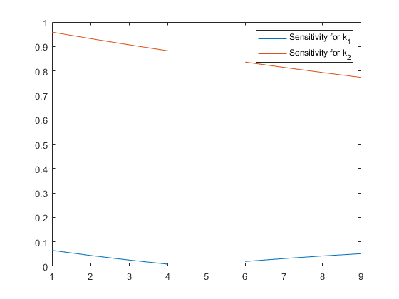

clear all
close all
clc
CT=10.15*60;
C0i=133.26;
k1b=0.00381;
k2b=0.00249;
delta=(0.8:0.05:1.2);
k1vals=delta*k1b;
k2vals=delta*k2b;
C1b=C0i*k1b*((exp(-k1b*CT)/(k2b-k1b))+((exp(-k2b*CT)/(k1b-k2b))));
for i=1:length(delta)
C1i_k1(i)=C0i*k1vals(i)*((exp(-k1vals(i)*CT)/(k2b-k1vals(i)))+((exp(-k2b*CT)/(k1vals(i)-k2b))));
changeC1_k1(i)=(C1i_k1(i)-C1b)/(C1b)*100;
Sens_k1(i)=(abs(C1b-C1i_k1(i))/C1b)*(k1b/abs(k1b-k1vals(i)));
C1i_k2(i)=C0i*k1b*((exp(-k1b*CT)/(k2vals(i)-k1b))+((exp(-k2vals(i)*CT)/(k1b-k2vals(i)))));
changeC1_k2(i)=(C1i_k2(i)-C1b)/(C1b)*100;
Sens_k2(i)=(abs(C1b-C1i_k2(i))/C1b)*(k2b/abs(k2b-k2vals(i)));
if Sens_k1(i)>Sens_k2(i)
fprintf('K1(%.4f) is more sensitive.\n',k1vals(i))
elseif Sens_k1(i)<Sens_k2(i)
fprintf('K2(%.4f) is more sensitive.\n', k2vals(i))
else
fprintf('Error, this is the base case.\n')
end
end
hold off
plot(Sens_k1)
hold on
plot(Sens_k2)
legend('Sensitivity for k_1','Sensitivity for k_2')
fprintf('\n')
disp('Percent change in NO2 values for each k_1 value')
fprintf('\n')
VarNames1 = {'0.8k1', '0.85k1', '0.9k1', '0.95k1', 'k1', '1.05k1','1.1k1','1.15k1','1.2k1'};
T1 = array2table(changeC1_k1,'VariableNames',VarNames1);
disp(T1)
fprintf('\n')
disp('Percent change in NO2 values for each k_2 value')
fprintf('\n')
VarNames2 = {'0.8k2', '0.85k2', '0.9k2', '0.95k2', 'k2', '1.05k2','1.1k2','1.15k2','1.2k2'};
T2 = array2table(changeC1_k2,'VariableNames',VarNames2);
disp(T2)
K2(0.0020) is more sensitive.
K2(0.0021) is more sensitive.
K2(0.0022) is more sensitive.
K2(0.0024) is more sensitive.
Error, this is the base case.
K2(0.0026) is more sensitive.
K2(0.0027) is more sensitive.
K2(0.0029) is more sensitive.
K2(0.0030) is more sensitive.
Percent change in NO2 values for each k_1 value
0.8k1 0.85k1 0.9k1 0.95k1 k1 1.05k1 1.1k1 1.15k1 1.2k1
_______ ________ ________ _________ __ ________ ________ ________ _______
-1.3005 -0.66148 -0.25366 -0.043058 0 -0.09858 -0.31621 -0.63322 -1.0325
Percent change in NO2 values for each k_2 value
0.8k2 0.85k2 0.9k2 0.95k2 k2 1.05k2 1.1k2 1.15k2 1.2k2
______ ______ ______ ______ __ _______ _______ _______ _______
19.175 13.983 9.0673 4.4112 0 -4.1804 -8.1432 -11.901 -15.465
